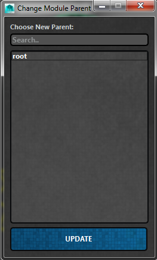

ART_ChangeModuleParentUI¶
Author: Jeremy Ernst
-
class
Interfaces.ART_ChangeModuleParentUI.ART_ChangeModuleParent_UI(currentParent, moduleInst, rigUiInst, parent=None)[source]¶ This class allows the user to change the parent module bone of a given module. It is found within the skeletonSettingsUI of an individual module in the Rig Creator.
-
__init__(currentParent, moduleInst, rigUiInst, parent=None)[source]¶ Instantiates the class, taking in current module information, and builds the interface.
Parameters: - currentParent – The current module parent bone of this module.
- moduleInst – The instance in memory of the module whose name is to change.
- rigUiInst – The instance in memory of the Rig Creator UI from which this class was called.
-
applyModuleParentChange()[source]¶ Gets the new parent from the selected ListWidgetItem text and then checks to make sure the selected parent isn’t a bone that is part of the module we’re trying to change the parent on. Then updates text and attribute values where needed.
Note
- The following things get updated:
- Current Parent text item in the Skeleton Settings UI
- Network Node .parentModuleBone attribute
- Constrains nodes based on new parenting relationship
-